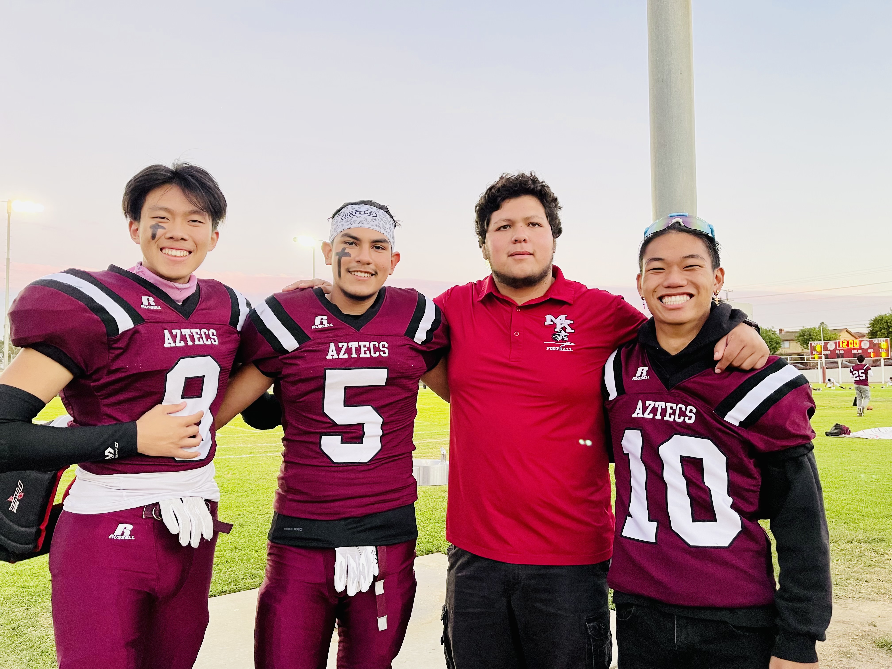
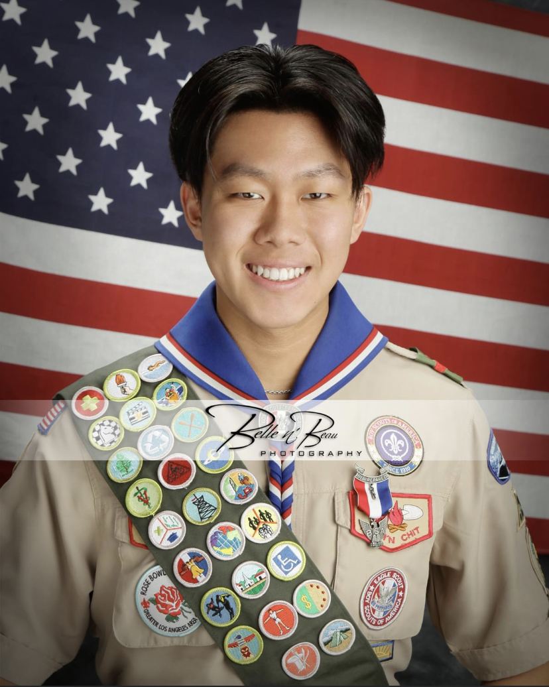
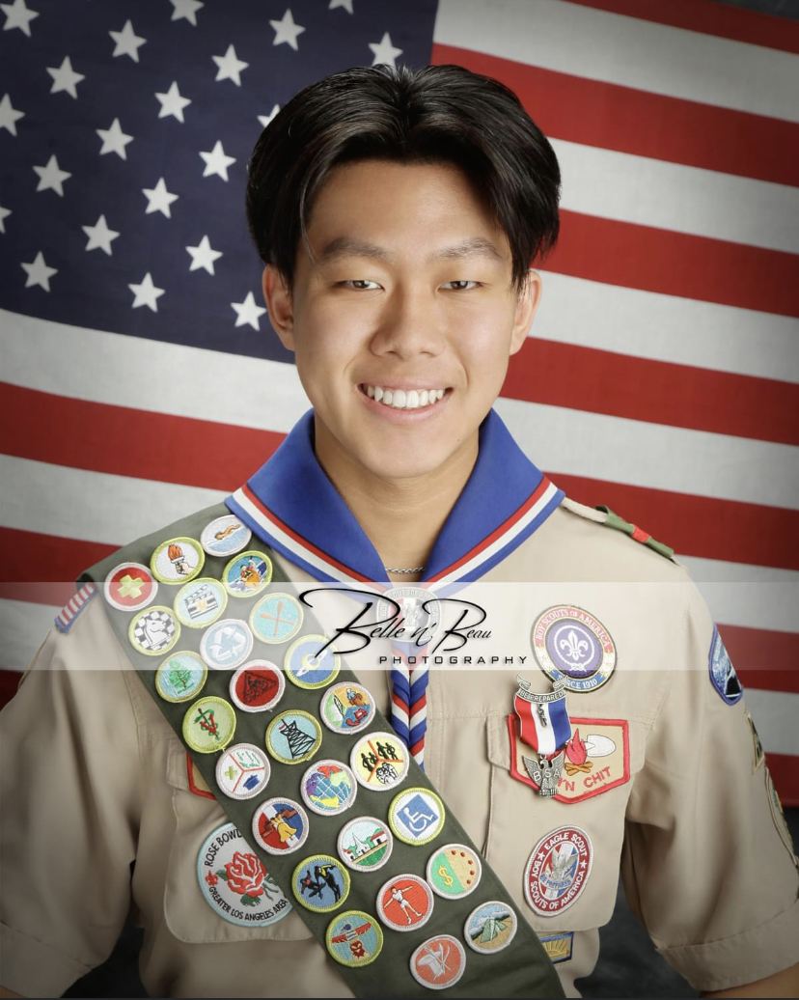

Seth Lau
Leadership: Boy Scouts: 8 Years, Football Captain: 3 Years
Awards: Eagle Scout, Chargers Leadership Summit
Work Experience: NFL Flag Football Referee: 2021-2023 (Taking control in potentially intense and uncomfortable situations. Game management and time
management. Additional duties as assigned. Be responsible in showing up for shifts on time and
communicating any scheduling conflicts with management. As Head Referee, I was responsible for
leading the other referees, managing parents and other coaches, and most of all ensuring all teams
followed the rules and played fairly.)
Experience
Eagle Scout
• Recipients are chosen after a lengthy interview process and an examination of their resumes. About
6% of scouts have ever reached this award as it is a high-standing award. The application process for
this award is lengthy. I held 2 leadership positions for 6+ months, completed 21 merit badges, finished
an extensive interview, and received approval from the Eagle Board to achieve this award. I started
scouting in the 5th grade and after 9 years of consistent commitment and dedication to leadership and
community service, I obtained this prestigious award.
NFL Flag Football Referee
• Taking control in potentially intense and uncomfortable situations. Game management and time
management. Additional duties as assigned. Be responsible in showing up for shifts on time and
communicating any scheduling conflicts with management. As Head Referee, I was responsible for
leading the other referees, managing parents and other coaches, and most of all ensuring all teams
followed the rules and played fairly.
Captain, Mark Keppel High School Football Team
• I did the following list of tasks: organized and led team activities (team meals, and bonding events),
communicated with coaches to discuss team management, was a representative of the team when
meeting with referees and other schools, demonstrated and showed skills needed for the sport
including, sportsmanship, trust, and communication.
Education
UC Riverside
Portfolio




